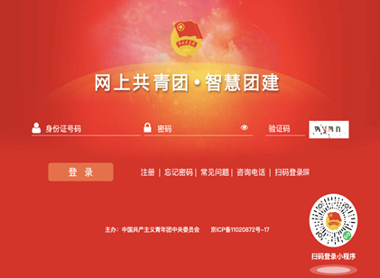

学院通知 · 教学通知
关于2024级研究生党团组织关系转接的通知
发布时间：2024-06-15
一、党组织关系转接相关信息 1 、省内转入（系统） 支部：中共四川大学文学与新闻学院 2024 级临时支部委员会 （组织编码： 051024001003048 ） 2 、省外转入 （ 1 ）方式一：系统转入 抬头：中共四川大学文学与新闻学院委员会（ 051000011172 ） 支部：中共四川大学文学与新闻学院 2024 级临时支部委员会 （ 2 ）方式二：线下（介绍信）转入 抬头：中共四川大学文学与新闻学院委员会 支部：中共四川大学文学与新闻学院 2024 级临时支部委员会 二、团组织关系转接相关信息 1. 打开浏览器， 输入智慧团建网址 (https://zhtj.youth.cn/zhtj/ ) ， 输入账号密码进行登录。 2 . 进入首页， 点击右下角“ 关系转接 ”按钮。 3 . 选择“ 组织关系转接 ”栏 ( 默认就是这一栏 ) ， 进入如下界面 。 4. “ 申请转入组织 ”信息选择： 步骤一： 步骤二： 党组织关系转接如有疑问，请联系 牛老师，电话 028-85993998 团组织关系转接如有疑问，请联系 黄老师，电话 19940986612 （短信） 毛同学： QQ 2622317107 黄同学： QQ 494669809 熊同学： QQ 3094442314 四川大学文学与新闻学院 2024 年 6 月 15 日
